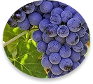
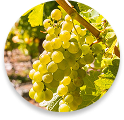
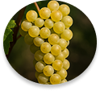

DRUE SORTER
I Danmark kræver vinproduktion særligt tilpassede druesorter, der kan trives i vores kølige klima.
Derfor arbejder vi primært med de robuste og alsidige sorter: Solaris, Muscaris og Johanniter.
De giver os mulighed for at skabe hvidvine med både karakter, friskhed og nordisk elegance.
Læs mere om vores 3 drue sorter herunder.
JOHANNITER
Johanniter er en tysk hvidvinsdrue skabt til køligere klimaer, og vinder frem i Danmark.
Den giver elegante og let krydrede vine med noter af citrus, grønne æbler og blomster.
Johanniter er modstandsdygtig og velegnet til både tørre og mousserende hvidvine med friskhed og finesse.
SOLARIS DRUE
Solaris er Danmarks mest dyrkede hvidvinsdrue, robust, tidligt modnende og velegnet til økologisk produktion.
Den giver friske og frugtrige vine med noter af æble, citrus og undertoner af tropisk frugt.
Solaris er elsket for sin balance mellem syre, sødme og sit potentiale i nordisk terræn.
MUSCARIS DRUE
Muscaris er en aromatisk, hvid druesort skabt til kølige klimaer, perfekt til dansk vinproduktion.
Den er kendt for sin intense duft af blomster og frugt, med noter af muskat, citrus og hyld.
Muscaris trives godt økologisk og giver elegante hvidvine med både friskhed og karakter.